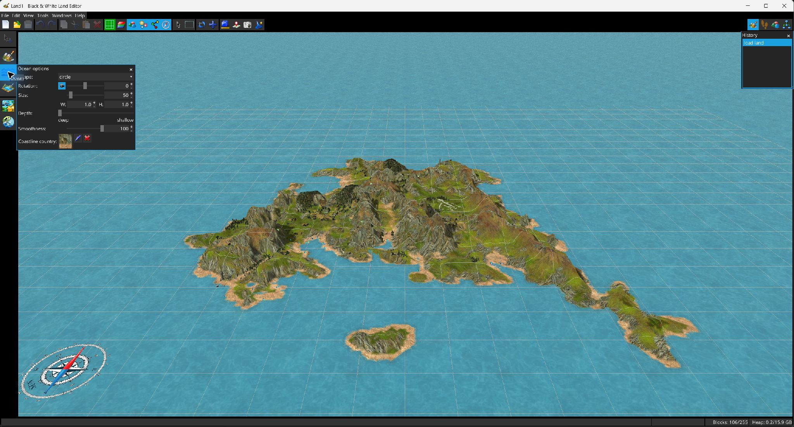
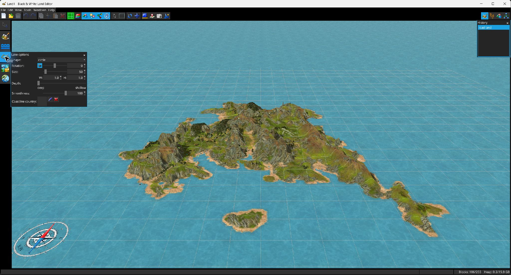

The Ocean  and Lake
and Lake  tools use specialized sculpt brushes that create valid water/coast transitions while shaping terrain depth.
tools use specialized sculpt brushes that create valid water/coast transitions while shaping terrain depth.


Both tools expose brush shape, angle, size, W/H proportions, depth, smoothness and coastline country. The coastline country can be selected from the country picker, picked from an existing map cell or cleared.
The brush also maintains cell water/coast flags and adapts neighboring elevations to create the required transition levels.